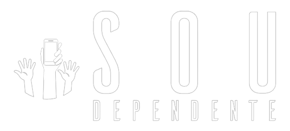

Home
Quem somos
Teste
Acessibilidade
Blog
Dependência Tecnológica
Questão 1
Com que frequência você verifica seu smartphone ou dispositivo eletrônico durante o dia?
O dia inteiro com intervalos curtos.
O dia inteiro com intervalos longos.
Questão 2
Você sente dificuldade em ficar um período prolongado sem acessar a internet ou usar seu smartphone?
Sim! Não consigo passar muito tempo sem internet ou meu dispositivo eletrônico.
Não! Eu consigo passar um tempo sem internet ou meu dispositivo eletrônico.
Questão 3
Quanto tempo você passa em média nas redes sociais todos os dias?
Somente em horas vagas.
O dia todo.
Questão 4
Você se sente ansioso (a) ou inquieto (a) quando não tem acesso à tecnologia por algum tempo?
Sim! Me sinto muito ansioso ou inquieto.
Não! consigo controlar minhas ações.
Questão 5
Com que frequência você se distrai com notificações ou mensagens em seu dispositivo durante tarefas importantes ou interações sociais?
Deixo para verificar após as tarefas.
Verifico na hora.
Questão 6
Você tem dificuldade em estabelecer limites de tempo para o uso da tecnologia?
Sim, costumo não reparar no tempo.
Não, eu costumo me conscientizar em relação ao tempo.
Questão 7
Você sente que seu uso da tecnologia está afetando negativamente suas relações pessoais?
Sim, sinto que estou cada vez mais distante.
Não, eu consigo dividir bem a tecnologia e as relações pessoais.
Questão 8
Você apresenta dificuldades para se concentrar ou dormir devido ao uso excessivo de dispositivos eletrônicos?
Sim! Não tenho um sono controlado e me desconcentro quando estou com algum dispositivo eletrônico.
Não! Eu tenho um sono bem controlado e não perco o foco em atividades importantes.
Questão 9
Você sente que sua produtividade ou desempenho acadêmico/profissional está sendo prejudicado pelo uso excessivo de tecnologia?
Sim, estou deixando as atividades importantes como segunda opção.
Não, só utilizo a tecnologia depois das tarefas ou para me ajudar em algumas tarefas.
Obrigado por responder o quiz!
Seu diagnóstico é: